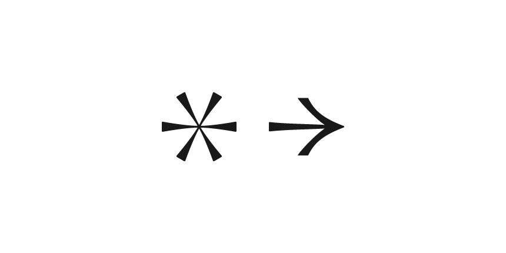
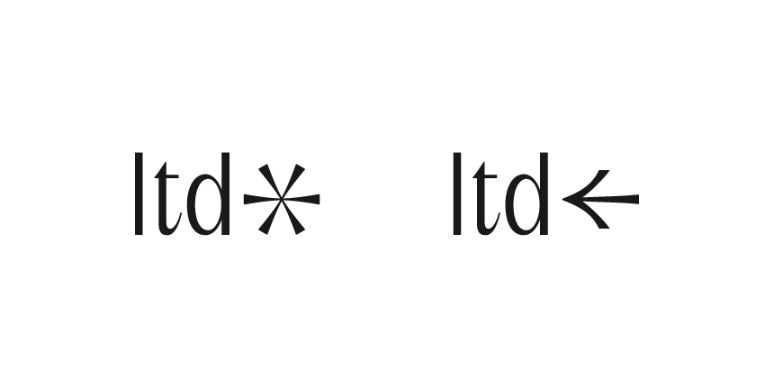
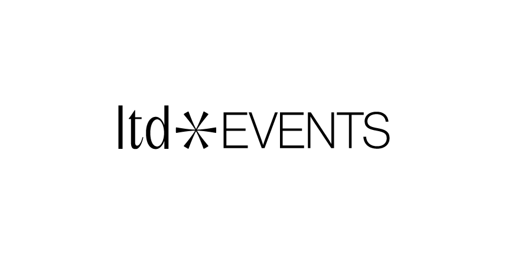
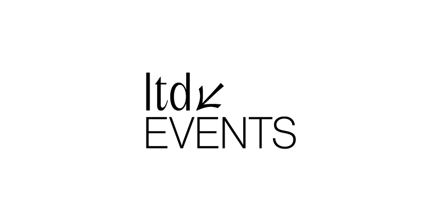
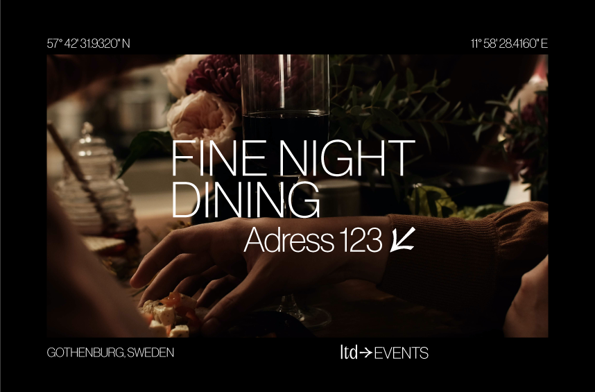
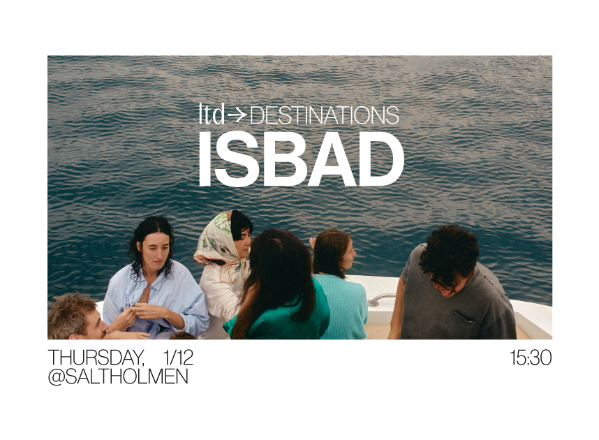

Min rekommendation
Jag bifogar detta och vill verkligen slå ett slag för denna logotypen.
Nu arbetar vi endast fram en logotyp och färger kommer när den är bestämd - men av alla förslag jag tagit fram och bollat med, anser jag att denna har högst potential.
Det finns mycket man kan göra med utförandet rent digitalt, analogt, konceptuellt och grafiskt. Logotypen är i min åsikt en mycket bra kombination av modernitet, coolhet och lyx.
Kika gärna en extra runda så hörs vi under vecka 45. Trevligt helg!








Slut!